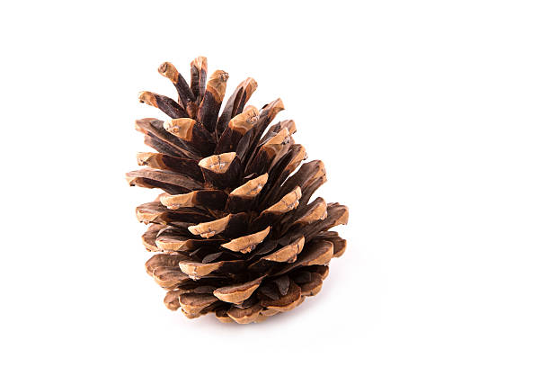
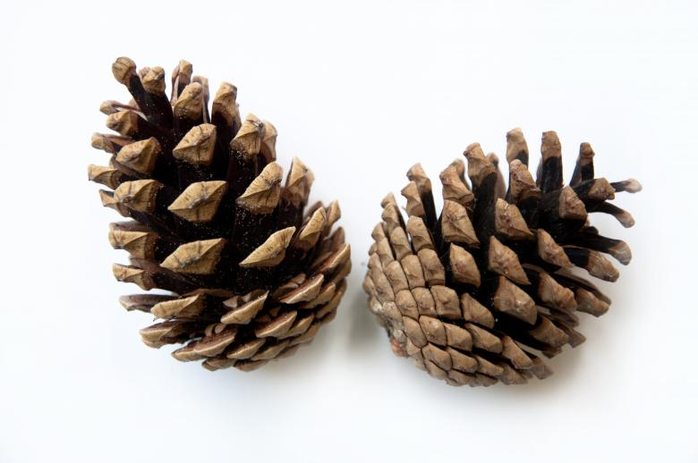
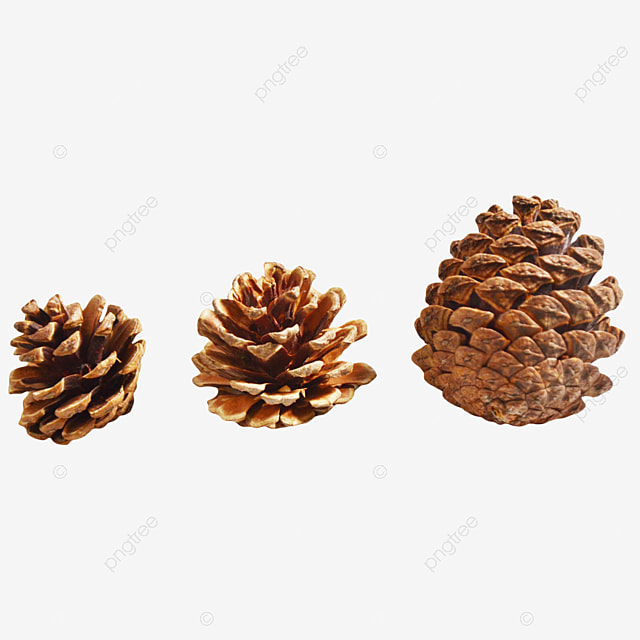

Pinecones!!
About Me
Love For Bears
Random Data
My Passions!
One Pinecone

A small picture of one pinecone
Two Pinecones

A small picture of two pinecones
Three Pinecones

A small picture of three pinecones